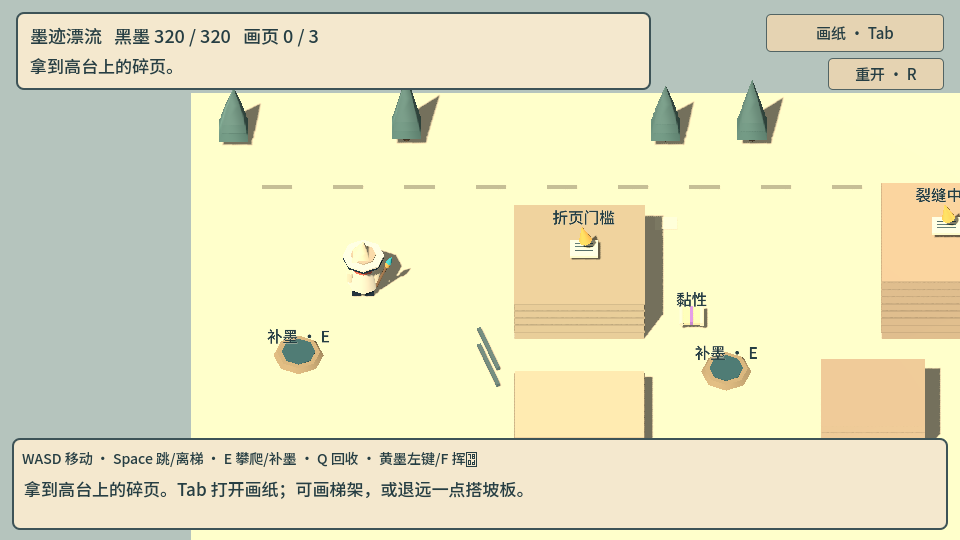
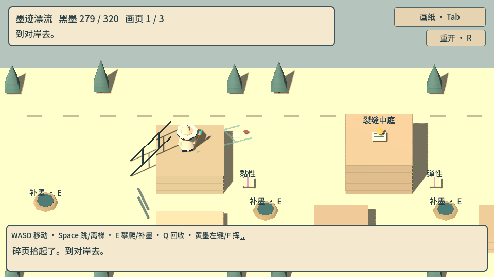
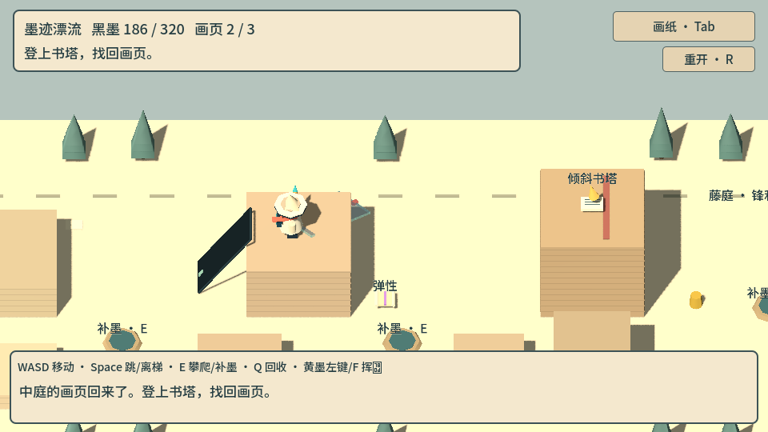

INKBOUND / 墨迹漂流 · 第一本绘本

画短一点，就得走近一点。形状和尺寸参与每一次搭建。
一段亲手画出来的冒险
实机录像，包含绘画、搭建、攀爬、墨刃切藤和最终画页。也可以看板面与搭梯绕行路线。
黑墨搭出身体
多笔画出边梁和横档，闭合轮廓成为板面。你的线条会留在世界里。
词条改变性质
弹性让原笔迹真正伸长；黏性让板面抓住更陡的坡。换一个词，继续用同一张画稿。
黄墨带来墨刃
找回画页后走进藤庭。挥动亲手画的武器，或继续搭出另一条路。
轮到你落笔了
手机请横屏：左侧摇杆移动，右侧点按跳跃、交互与画纸；在画纸上直接用手指落笔。上方实机录像来自原版键鼠试玩。

沿自己的笔迹，走到画页旁。

同一个高台，可以有另一种走法。